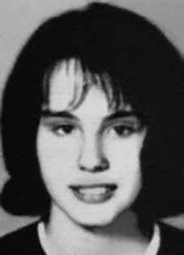

Lígia
Maria
Salgado
Nóbrega
BIOGRAFIA
Lígia Maria Salgado Nóbrega foi militante da Vanguarda Armada Revolucionária Palmares (VAR-Palmares) e é uma das vítimas da Chacina do Quintino. Nascida no Rio Grande do Norte, foi para São Paulo ainda pequena. Em 1967 entrou para o curso de Pedagogia da Universidade de São Paulo (USP), e em 1970 já militava na VAR-Palmares.
Essa organização, junto com a Ação Libertadora Nacional (ALN) e o Partido Comunista Brasileiro Revolucionário (PCBR), teria sido autora do assassinato do marinheiro inglês David Cuthberg, que se encontrava no país com uma força-tarefa da Marinha Britânica, em fevereiro de 1972. As forças de repressão identificaram Lígia como uma das integrantes do grupo responsável pela ação.
Um mês depois, os órgãos repressivos realizaram um cerco na casa 72, na avenida Suburbana, nº 8695, no bairro de Quintino, Zona Norte do Rio de Janeiro. A repressão teria a informação de que ali se escondia um dos principais chefes da VAR-Palmares, James Allen da Luz, companheiro de Lígia, de quem estava grávida de dois meses.
Segundo a versão oficial do Dops, os agentes de segurança foram recebidos à bala ao entrar no aparelho e, em legítima defesa, revidaram. Investigações recentes da Comissão Estadual da Verdade do Rio reforçam outra versão para as mortes de Lígia e de outros dois militantes que estavam na casa, Antônio Marcos Pinto de Oliveira e Maria Regina Lobo Leite de Figueiredo. O laudo cadavérico dos militantes não atestou a presença de pólvora em suas mãos, o que refuta a tese de confronto.
A isso se somam documentos e depoimentos de vizinhos que afirmam que os militantes não ofereceram resistência. Eles declararam à comissão que os tiros não partiam de dentro da casa e que os policiais, ao entrarem na vila, pediram aos moradores que fizessem silêncio e se escondessem embaixo da cama. O legista que realizou as necropsias, afirmou à comissão que seus laudos foram alterados e que os corpos tinham sinais não só de execução, mas de tortura, como hematomas e coronhadas.
Lígia Maria Salgado Nóbrega was a member of the Vanguarda Armada Revolucionária Palmares (VAR-Palmares) and is one of the victims of the Quintino Massacre. Born in Rio Grande do Norte, she went to São Paulo when she was still little. In 1967 he entered the Pedagogy course at the University of São Paulo (USP), and in 1970 he was already active in VAR-Palmares.
This organization, together with Ação Libertadora Nacional (ALN) and the Brazilian Revolutionary Communist Party (PCBR), was allegedly responsible for the murder of English sailor David Cuthberg, who was in the country with a British Navy task force, in February 1972. The repression forces identified Lígia as one of the members of the group responsible for the action.
A month later, repressive bodies carried out a siege at house 72, on Avenida Suburbana, nº 8695, in the neighborhood of Quintino, North Zone of Rio de Janeiro. The repression contained information that one of the main heads of VAR-Palmares, James Allen da Luz, Lígia's companion, with whom she was two months pregnant, was hiding there.
According to the official Dops version, the security agents were shot at when they entered the device and, in self-defense, they retaliated. Recent investigations by the Rio State Truth Commission reinforce another version of the deaths of Lígia and two other militants who were in the house, Antônio Marcos Pinto de Oliveira and Maria Regina Lobo Leite de Figueiredo. The militants' cadaver report did not attest to the presence of gunpowder in their hands, which refutes the confrontation thesis.
Added to this are documents and testimonies from neighbors who claim that the militants offered no resistance. They told the commission that the shots did not come from inside the house and that the police, upon entering the village, asked the residents to remain silent and hide under the bed. The coroner who carried out the autopsies told the commission that his reports had been altered and that the bodies had signs not only of execution, but of torture, such as bruises and butts.
Lígia Maria Salgado Nóbrega fue miembro de la Vanguarda Armada Revolucionária Palmares (VAR-Palmares) y es una de las víctimas de la Masacre de Quintino. Nacida en Rio Grande do Norte, se fue a São Paulo cuando aún era pequeña. En 1967 ingresó al curso de Pedagogía de la Universidad de São Paulo (USP), y en 1970 ya militaba en el VAR-Palmares.
Esta organización, junto con la Ação Libertadora Nacional (ALN) y el Partido Comunista Revolucionario Brasileño (PCBR), fue presuntamente responsable del asesinato del marinero inglés David Cuthberg, quien se encontraba en el país con un grupo de trabajo de la Armada británica, en febrero de 1972. Las fuerzas de represión identificaron a Lígia como una de las integrantes del grupo responsable de la acción.
Un mes después, cuerpos represivos realizaron un asedio a la casa 72, en la Avenida Suburbana, nº 8695, en el barrio de Quintino, Zona Norte de Río de Janeiro. La represión contenía información de que allí se escondía uno de los principales jefes del VAR-Palmares, James Allen da Luz, compañero de Lígia, de quien estaba embarazada de dos meses.
Según la versión oficial del Dops, los agentes de seguridad recibieron disparos cuando ingresaban al dispositivo y, en defensa propia, tomaron represalias. Recientes investigaciones de la Comisión de la Verdad del Estado de Río refuerzan otra versión sobre la muerte de Lígia y otros dos militantes que se encontraban en la casa, Antônio Marcos Pinto de Oliveira y Maria Regina Lobo Leite de Figueiredo. El informe sobre el cadáver de los militantes no atestigua la presencia de pólvora en sus manos, lo que desmiente la tesis del enfrentamiento.
A esto se suman documentos y testimonios de vecinos que afirman que los militantes no ofrecieron resistencia. Dijeron a la comisión que los disparos no provinieron del interior de la casa y que la policía, al entrar al pueblo, pidió a los vecinos que guardaran silencio y se escondieran debajo de la cama. El médico forense que realizó las autopsias dijo a la comisión que sus informes habían sido alterados y que los cuerpos tenían signos no sólo de ejecución, sino de tortura, como hematomas y culatas.
CIRCUNSTÂNCIAS DA MORTE
Lígia Maria Salgado Nóbrega morreu no dia 29 de março de 1972 no episódio conhecido como Chacina de Quintino, operação policial realizada em uma casa que funcionava como aparelho da VAR-Palmares, em Quintino, no Rio de Janeiro. A ação foi organizada por agentes do Destacamento de Operações e Informações (DOI) do I Exército, contando com o apoio do Departamento de Ordem Política e Social do Estado da Guanabara (DOPS/GB) e da Polícia Militar (PM). Depois de cercarem o local, os agentes entraram na residência e atiraram contra os que estavam dentro da casa. Junto com Lígia foram mortos outros dois integrantes da VAR-Palmares: Antônio Marcos Pinto de Oliveira e Maria Regina Lobo Leite de Figueiredo. James Allen Luz, militante da mesma organização, encontrava-se no local mas conseguiu escapar do cerco. A versão oficial dos fatos divulgada à época pelos órgãos do Estado sustentava que Lígia morreu por disparo de arma de fogo depois de ter reagido à ação dos agentes dos órgãos de segurança. Contudo, as investigações indicam que Lígia morreu depois de ter sido ferida por disparos durante a invasão do aparelho da VAR-Palmares em Quintino. Em entrevistas realizadas pela Comissão Estadual da Verdade do Rio de Janeiro (CEVRJ), moradores de Quintino que eram vizinhos da residência à época dos fatos relataram que a polícia já se encontrava no bairro desde o final da tarde do dia 29 de março, preparando a operação que ocorreria à noite. Os moradores ainda afirmaram que os barulhos dos disparos não vieram de dentro da casa onde os militantes se encontravam, mas do lado de fora da casa, de onde partiu a ação dos agentes do Estado. Mais recentemente, manifestação apresentada pela equipe de perícia da Comissão Nacional da Verdade (CNV), baseada em documentos produzidos na ocasião dos fatos por órgãos do Estado, apontou que não havia nenhum vestígio de pólvora nos corpos das vítimas nem armas no local, o que permite inferir que não houve troca de tiros, tratando-se de uma ação unilateral dos agentes da repressão com o objetivo de executar os militantes. O corpo de Lígia deu entrada no Instituto Médico-Legal (IML) como desconhecido no dia 30 de março, mas a família só tomou conhecimento de sua morte posteriormente, através dos noticiários de televisão. O reconhecimento do corpo foi realizado por seu irmão no dia 7 de abril. Os restos mortais de Lígia Maria Salgado Nóbrega foram enterrados no cemitério de São Paulo.
Lígia Maria Salgado Nóbrega died on March 29, 1972 in the episode known as the Quintino Massacre, a police operation carried out in a house that operated as a VAR-Palmares apparatus, in Quintino, Rio de Janeiro. The action was organized by agents from the Operations and Information Detachment (DOI) of the 1st Army, with the support of the Department of Political and Social Order of the State of Guanabara (DOPS/GB) and the Military Police (PM). After surrounding the place, the agents entered the residence and shot those inside the house. Along with Lígia, two other members of VAR-Palmares were killed: Antônio Marcos Pinto de Oliveira and Maria Regina Lobo Leite de Figueiredo. James Allen Luz, a member of the same organization, was there but managed to escape the siege. The official version of the events released at the time by State bodies maintained that Lígia died from a gunshot after reacting to the action of security agents. However, investigations indicate that Lígia died after being injured by gunfire during the invasion of the VAR-Palmares apparatus in Quintino. In interviews carried out by the Rio de Janeiro State Truth Commission (CEVRJ), residents of Quintino who were neighbors of the residence at the time of the events reported that the police had already been in the neighborhood since the late afternoon of March 29, preparing the operation that would take place at night. Residents also stated that the noise of the shots did not come from inside the house where the militants were, but from outside the house, where the action of the State agents started. More recently, a statement presented by the expert team of the National Truth Commission (CNV), based on documents produced at the time of the events by State bodies, pointed out that there was no trace of gunpowder on the bodies of the victims nor weapons at the scene, which allows us to infer that there was no exchange of fire, in the case of a unilateral action by repression agents with the aim of executing the militants. Lígia's body was admitted to the Medical-Legal Institute (IML) as unknown on March 30, but the family only learned of her death later, through television news. The recognition of the body was carried out by his brother on April 7th. The mortal remains of Lígia Maria Salgado Nóbrega were buried in the São Paulo cemetery.
Lígia Maria Salgado Nóbrega murió el 29 de marzo de 1972 en el episodio conocido como Masacre de Quintino, un operativo policial realizado en una casa que funcionaba como aparato del VAR-Palmares, en Quintino, Río de Janeiro. La acción fue organizada por agentes del Destacamento de Operaciones e Información (DOI) del 1.º Ejército, con el apoyo del Departamento de Orden Político y Social del Estado de Guanabara (DOPS/GB) y la Policía Militar (PM). Luego de rodear el lugar, los agentes ingresaron a la residencia y dispararon contra quienes se encontraban dentro de la vivienda. Junto a Lígia fueron asesinados otros dos integrantes del VAR-Palmares: Antônio Marcos Pinto de Oliveira y Maria Regina Lobo Leite de Figueiredo. James Allen Luz, miembro de la misma organización, se encontraba allí pero logró escapar del asedio. La versión oficial de los hechos difundida en su momento por organismos del Estado sostuvo que Lígia murió por un disparo de arma de fuego tras reaccionar ante la acción de los agentes de seguridad. Sin embargo, las investigaciones indican que Lígia murió tras ser herida de bala durante la invasión al aparato del VAR-Palmares en Quintino. En entrevistas realizadas por la Comisión de la Verdad del Estado de Río de Janeiro (CEVRJ), vecinos de Quintino que eran vecinos de la residencia al momento de los hechos informaron que la policía ya se encontraba en el barrio desde la tarde del 29 de marzo, preparando el operativo que se desarrollaría en la noche. Los vecinos también manifestaron que el ruido de los disparos no provino del interior de la casa donde se encontraban los militantes, sino del exterior de la casa, donde comenzó la acción de los agentes estatales. Más recientemente, un comunicado presentado por el equipo de expertos de la Comisión Nacional de la Verdad (CNV), con base en documentos producidos al momento de los hechos por organismos del Estado, señaló que no hubo rastros de pólvora en los cuerpos de las víctimas ni armas en el lugar, lo que permite inferir que no hubo intercambio de disparos, tratándose de una acción unilateral de los agentes de represión con el objetivo de ejecutar a los militantes. El cuerpo de Lígia fue ingresado en el Instituto Médico Legal (IML) como desconocido el 30 de marzo, pero la familia se enteró de su muerte recién más tarde, a través de un noticiero televisivo. El reconocimiento del cadáver lo realizó su hermano el pasado 7 de abril. Los restos mortales de Lígia Maria Salgado Nóbrega fueron sepultados en el cementerio de São Paulo.